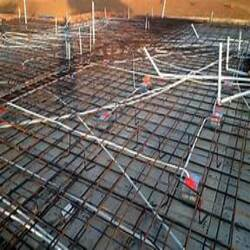

-
Is Prestressed Concrete Your Best Choice for a Construction Project?
Posted on April 20, 2018 by Bizadmin

Prestressed concrete can speed the building process and provide added benefits for your construction project. Consulting with your local Houston concrete contractor can help you determine if prestressed components are right for your building needs. These advanced building materials offer significant benefits for many projects. Here are some of the most important facts about prestressed concrete systems in our area.
Two Basic Methods for Prestressing
Prestressed concrete components can be created in two basic ways:
- Pre-tensioned concrete is formed around tendons that have already been subjected to tension before the concrete is poured. These tendons typically consist of metal strands that support and offer greater tensile strength to the concrete component. Once the concrete has cured and adhered to the tendons, the tension on the tendons is released. This can create greater compression and durability for the components produced using this method.
- In some cases, your Houston concrete supply contractor may recommend the use of post-tensioned concrete for your building project. Unbonded and bonded post-tensioning methods are commonly used to provide added compression and strength to concrete slabs and pre-fabricated construction components. Bonded concrete is ideal for use in larger slab foundations. Unbonded post-tensioning, however, allows for individual adjustment of tendons as geologic conditions dictate.
Your Houston ready mix contractor can provide you with added information on the most effective and practical choice for your construction project.
Benefits of Prestressed Concrete
Prestressed concrete offers a number of key advantages for builders in our area, including the following:
- Prestressed concrete components can be used to span larger areas even under heavy loads for greater flexibility during the construction process.
- Concrete that has been prestressed is less likely to crack or crumble.
- The compression methods used to create prestressed concrete results in smaller sections and easier transportation of those sections to the worksite.
- Prestressed concrete is an economical solution for construction projects.
- Because prestressed components can be poured and cured off-site, they can take less time to assemble than comparable on-site poured concrete components.
Prestressed concrete components from a Houston concrete contractor can make a big difference in the performance and functionality of your construction project.
The experts at Texas Concrete Enterprise Ready Mix Inc. can provide you with the commercial and residential concrete services you need to achieve your goals. Our certified Houston concrete contractor technicians have the experience and proven knowledge needed to formulate the right concrete options for your project. We work with you to determine the most effective solutions and the right options for you and your company. Call us today at 713-227-1122 to discuss your needs with us. We look forward to working with you.
This entry was posted in Concrete and tagged Houston Concrete Contractor, Houston Concrete Supply, Houston Ready Mix Contractor. Bookmark the permalink.